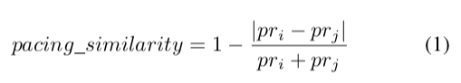

We began the study by asking students from the US and Mexico to work in teams on software development projects. Once the projects were completed, we extracted temporal patterns (using three different measures) from a team mem-bers’ interaction data. Finally, we determined the relationship between our temporal variables and Task cohesion. A more detailed description of team composition and the assigned projects now follows.
The data set that was used in this study was obtained from three student global software development projects that occurred between 2014 and 2015. Students who participated in these projects were enrolled in computer science courses at the University of North Texas and Universidad Politecnica´ de Altamira, which were located at the United States of America and Mexico, respectively. While each of the three projects contained some aspect related to the software development process, the actual assignments often varied in terms of team size (4-8 members), and specific task. For example, two of the projects asked students to redesign a non-profit website. The specific tasks consisted of redesigning three sections of the website (i.e., the home page, the events page, and the contribution page) and implementing a database that could support the various operations that were needed to maintain the three pages. A third project consisted of the creation of a website that would allow students to learn about an optimization algorithm. The various elements of the website included a section where users could read information about the algorithm, as well as a sections where users could test the algorithm.
Students who participated in the three projects were asked to communicate with one another using a project management web application. This application platform supported several collaborative tools including chat, forums, wikis, document sharing, etc. Moreover, the particular application software was enhanced so that it recorded and timestamped all interactions among group members and transferred this information to a centralized database.
In order to analyze the group data, we developed three temporal measures (Pacing similarity, Pacing rate, and Syn-chrony), which we believed to be good predictors of a team’s Task Cohesion levels within a global software development context.
Task cohesion: Cohesiveness is a construct that measures the degree to which team members are working together. To calculate the value of this construct, we used an individual survey approach because it seemed more appropriate for a distributed virtual team context [1]. Therefore, this research focused on the prediction of group cohesion through an indi-vidual survey intended to capture an individual’s perception of their team, as defined by questions on the Task Cohesion section of the Group Environment Questionnaire (GEQ) [2]. A group’s cohesion measure was then obtained by averaging each team’s individual responses to the survey. In this work, the cohesion values obtained from this survey were then aggregated and called Task cohesion.
Pacing rate and Pacing similarity: The Pacing rate (pr) was defined as the average number of seconds between messages from the same user. After this information was obtained, we computed the Pacing similarity score for each member by averaging the similarity of the Pacing rate of a user i to the Pacing rate of the rest of the team members, one at a time (see Equation 1).

Synchrony: The other major temporal measure captures the synchrony of messages sent between two individuals; where the messages from each user are defined as a time series, and then these frequencies are then compared to one another, one at a time [3]. For instance, Figure 1 shows, as a data series, the number of message sent by four participants in a team.
We estimated the spectral density from each data series by creating a periodogram using a Fast Fourier transform. The Figure 2 shows the periodogram, a diagram of frequencies by amplitude.
From this information, we calculated the coherence between two time series, which was the correlation between paired members of each frequency. As a result we got a coherence series for each combination of pairs within a team (c(2, n)), see Figure 3.
This calculation, then, results in a vector of coherence values (each value representing coherence in a specific frequency) between two subjects. To provide a unique temporal value between two individuals, we took the highest coherence score. Finally, for each participant in a team, we obtained the highest coherence scores of a participant as compared to the rest of the team members and averaged those scores. This measure was called Synchrony.
We also calculated these measures at the group-level by averaging their values i.e. Group task cohesion, Group pacing rate, Group synchrony.
Using the previous metrics, we proposed a set of experi-ments that would produce an assessment of the performance of temporal features as predictors of Task cohesion.
In this set of experiments, we examined the relationship between Task cohesion and the three temporal measures of Synchrony, Pacing similarity, and Pacing rate. We also chose between Pacing similarity and Pacing rate as the best pacing representation to create a linear model.